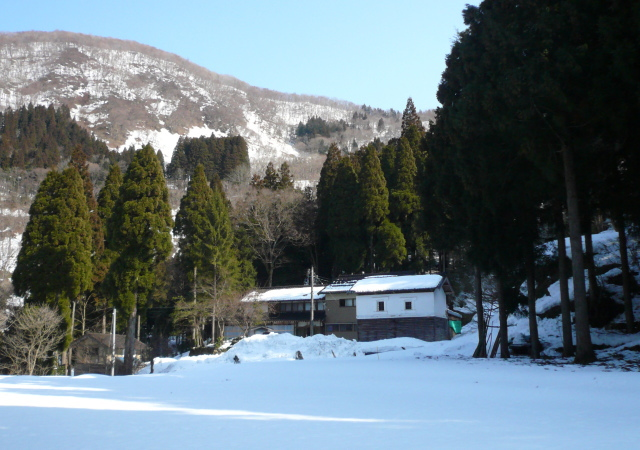

{kind=link}
五箇山三ヶ村のひとつ 利賀村には「学校跡を有する廃村」が13ヶ所あり，平成の大合併前の自治体では日本最大です（合併後は南砺市の22ヶ所が最大）。
旅の目的地は迷いなく利賀村に決まりました。目標は冬ということもあるので，利賀村でいちばん山が浅い口山地区の3集落 栃原，下原，北原になりました。このうち北原（Kitabara）には旅館と温泉民宿が1軒ずつあり，「泊まるにはここがいい」と決めたのが，この日の宿「利賀乃家」です。
平成21年2月2日（月，旅2日目）は朝6時半起床。まず宿からいちばん遠い栃原（Tochihara）まで歩き，栃原，下原，北原と探索する予定です。朝食をとった後，宿を出発したのは朝7時50分。天気は晴で，天気予報の最高気温は8℃。「この季節には珍しいのでは」とご主人に尋ねると，「今年の冬は雪が少なく，この二三日暖かかったので，だいぶ雪が融けた」とのこと。前日の飛騨神岡とは対照的な，穏やかな冬景色が楽しめそうです。
{kind=link}
長崎大橋から栃原分岐まで（0.8km）はフラットなR.156。富山・高岡と五箇山・白川村を結ぶ主要道と思いきや，城端を経由するR.304がメインで，口山地区ではローカル道でした。しかも通行止区間が発生したため，五箇山の中心部には通じておらず，クルマはほとんど走っていません。途中下原分岐にはかんぽの宿「越中庄川峡」の廃墟があります（平成16年2月閉館），宿の閉鎖にあわせて，下原までのバスの便は小牧堰堤までになったとのこと。
栃原分岐から栃原まで（1.5km）はヘアピンカーブが3ヶ所ある急な上り坂。除雪された道の途中には採石場があり，トラックも走っていそうです。
{kind=link}
凍結箇所に注意しながら道を進むと，「サンタの森」というスキー場の跡があります（平成13年春閉鎖）。スキー場の手前の民宿「山粋」も閉ざされています。レストハウス跡の大きな建物の対面には広々としたゲレンデ跡があり，青空の下，見晴らしの良い引き締まった雪の上を歩くのは爽快です。
{kind=link}
{kind=link}
畜産施設の下手にも足を運び，南北朝時代の浄土真宗の僧侶（綽如上人）に由来する「御佛供清水」（おふくしょうず）という史跡を探索しました。史関の上手には石碑があったので見てみると，学校跡ではなく念仏道場跡を示す石碑でした。綽如（しゃくにょ）は，井波町の由緒あるお寺「瑞泉寺」を建立したことで知られる僧侶で，井波の町の入口には，綽如上人の大きな像が立っているそうです。
利賀小学校下原冬季分校はへき地等級2級，児童数16名（S.34），昭和10年開校，昭和48年に通年の分校となり，昭和61年より現在まで休校中です。RC造2階建ての小さな建物の入口には「利賀小学校下原分校」と記す文字がありました。
{kind=link}
分校からはすぐそばの「かいこ堂」へ戻り，高台にある神社（八幡宮）にも足を運びました。神社に続く急な上り坂は段々畑を貫いており，脇にはすごい早さで水が流れています。小さな神社ながら「神の宿る場所」としての存在感は抜群です。
{kind=link}
{kind=link}
長崎大橋を渡り，北原の手前の集落 長崎にある4軒の家屋はすべて民宿です。道沿いに神社（蔦崎社）があったので，立ち止まってご挨拶。神社のそばには「新しい地域づくりを目指して 利賀ダム工事事務所」という看板がありました。ダム工事にあわせて，庄川町から利賀村中心部へ向かうR.471のバイパスが作られていて，長崎も通るとのこと。長崎の宿に人の気配が感じられたのは，工事関係者が泊まられているからかもしれません。
長崎・北原の宿の温泉の名称は新大牧温泉でしたが，平成18年に新たに掘削した源泉の利用が始まり，庄川峡長崎温泉に改称したそうです。
温泉に入って温まって，昼食をとると，北原の分校跡と神社の探索開始です。宿の主人に尋ねると，「分校跡は宿の目の前の平地で，校舎はずいぶん前に積雪でつぶれてしまった」とのこと。また，神社は「分校跡の平地を進むと，左手にある」と教えていただきました。
利賀小学校北原分校はへき地等級2級，児童数18名（S.34），明治35年開校，昭和46年休校，昭和60年閉校。宿の対面には蔵があり，蔵の後方は真っ白な雪原です。草木のない広がりは「確かに分校跡」とも思えましたが，往時の痕跡は見つけることができませんでした。
.. ..
..
{kind=link}
帰り道は「用事があるから」ということで，お母さんのクルマで井波町まで送っていただきました。どうもありがとうございます。
木彫りの町で有名な井波は，私の職場の石岡理事長の故郷です。理事長のお勧めもあり，井波では北陸最大規模の木造建築物という瑞泉寺に加えて「池波正太郎ふれあい館」，旧加越能鉄道井波駅舎に足を運びました。木彫りの町ということで，家への土産にはお箸をふたつ買いました。
-
(追記1) この旅のおよそ半月後（2/14（土）），「廃村と過疎の風景(3)〜学校跡を有する廃村」の冊子が完成しました。
(追記2) 平成21年のGW（4/29（水））には，長野県飯山市の廃村 沓津（Kuttsu）の春まつりに参加しました。「廃村(3)」の本編の最後に記した「チョウさんに連絡を取って，GW頃に行われる神社の例祭には，「廃村(3)」の冊子を持って出かけたい」が実現しました。春まつり参加のレポートは，冊子「廃村と過疎の風景(6)」集落の記憶に，旅行記としてまとめました。
(追記3) 平成23年3月，利賀小学校下原分校は25年の休校期間を経て，閉校となりました。
{kind=link}
{kind=link}